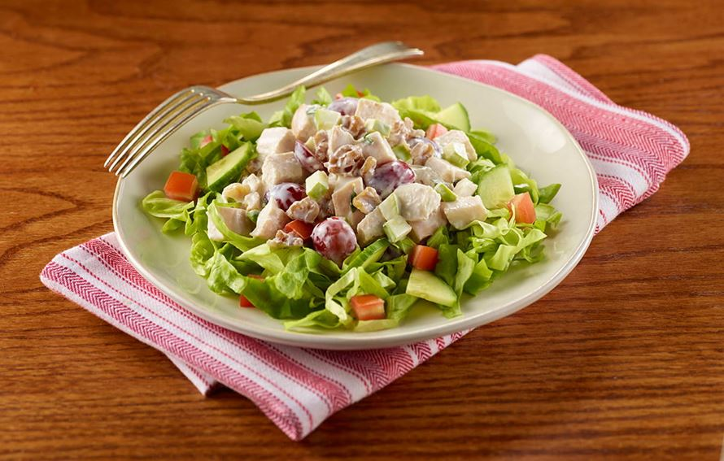

Description
Perfect for a lazy summer's day where you don't feel like doing much but
you do feel like having a tasty meal!
Ingredients (serving two)
- 400 grams of chicken thigh
- Half a cucumber
- 250 grams of cherry tomatoes
- 2 avocado's
- Bag of mixed lettuce
- 1 granny smith apple
- 100 grams of mayonaise
- 4 tbsps of water
- 2 tbsps of vinegar
- 1/4 teaspoon of mustard
Steps
- Cut up the chicken thigh into small pieces and fry in a pan
-
Dice the cucumber, tomatoes, apple and avocado's into small blocks
-
Mix the lettuce with the other vegetables and the chicken once that's
done cooking
-
Mix the mayonaise in a bowl together with the water, vinegar and the
mustard into a vinaigrette
- Add the vinaigrette to the salad and stir it in well
- Bon apetit!